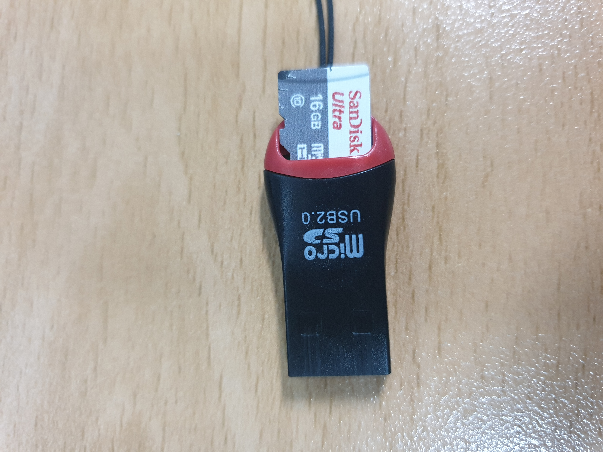
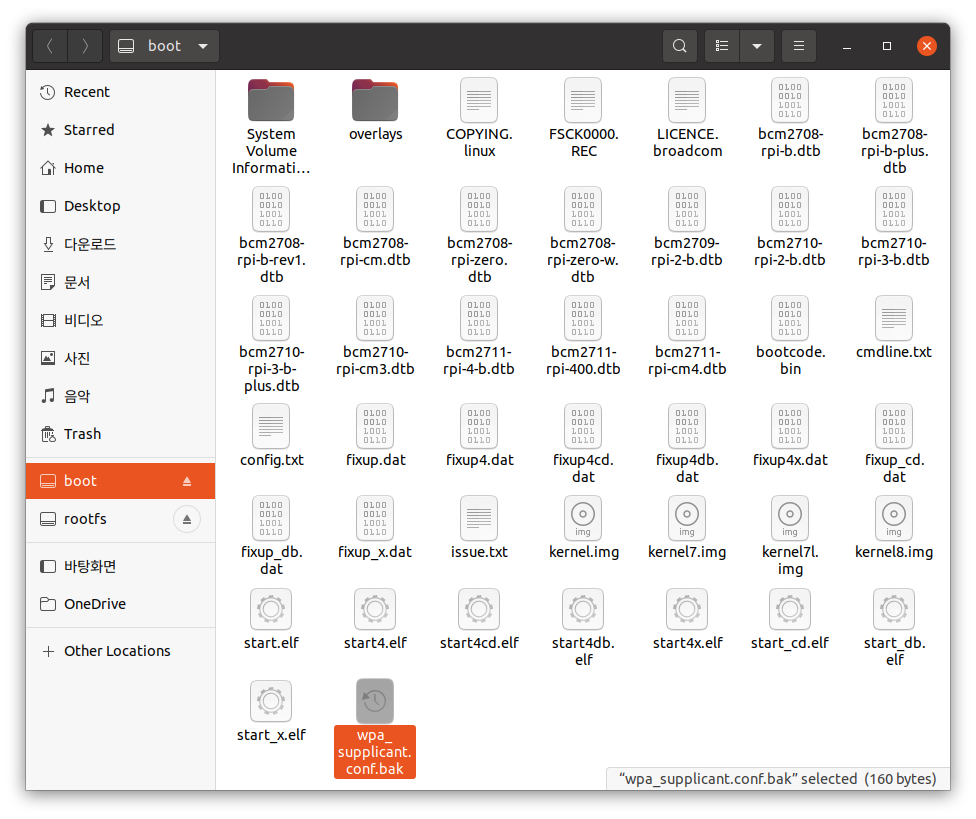
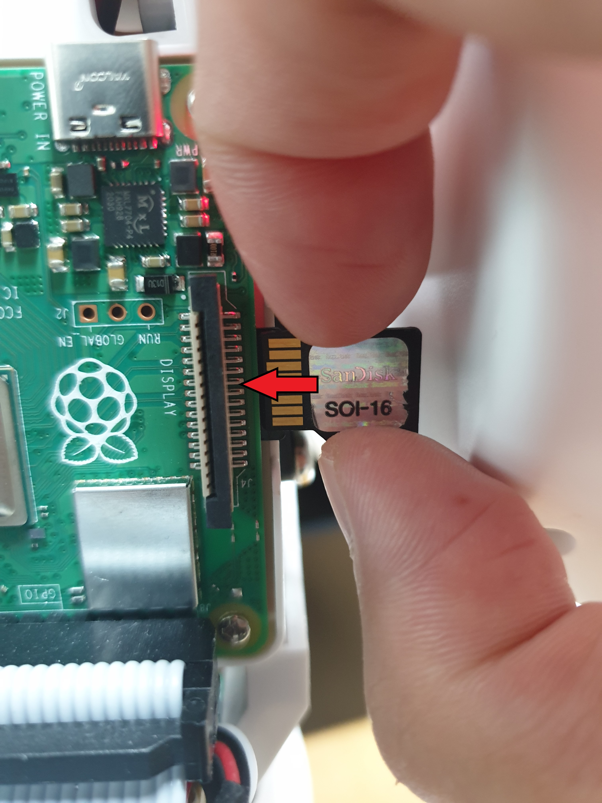

설치 및 부가설정¶
설치¶
파이보 microSD카드에
CIRCULUS_EDU_OS를 설치합니다.무선 인터넷(wifi)을 연결합니다.
microSD카드를 USB 어뎁터에 연결하고, 이를 컴퓨터에 연결합니다.

microSD카드
boot디렉토리에서wpa_supplicant.conf파일을 수정합니다.country=KR ctrl_interface=DIR=/var/run/wpa_supplicant GROUP=netdev network={ ssid="YOUR_NETWORK_NAME" psk="YOUR_PASSWORD" key_mgmt=WPA-PSK }
YOUR_NETWORK_NAME: 접속하려는 wifi 주소로 수정YOUR_PASSWORD: wifi 주소의 비밀번호로 수정
microSD카드로 부팅을 하게되면
wpa_supplicant.conf파일이 사라집니다.만약 새로운 네트워크에 접속하려면,
wpa_supplicant.conf.bak파일을 복사하여새로운
wpa_supplicant.conf를 만들어 wifi 설정 후 사용합니다.
파이보에 microSD카드 결합 후 전원을 켭니다.

파이보의 등껍질을 열고, 오른쪽 겨드랑이 부분에 삽입합니다.
이 때, 왼쪽의 금박 부분을 바라보는 방향으로 삽입합니다.
컴퓨터에서도 파이보와 같은 네트워크에 접속합니다.
컴퓨터에서 파이보로 ssh 접속 합니다.
ssh란, 원격으로 다른 컴퓨터와 통신을 할 수 있는 방법입니다.
이를 통해 컴퓨터를 사용해 파이보를 제어할 수 있게 됩니다.
Terminal (windows 에서는 PowerShell) 을 켜고 다음과 같이 입력합니다.
ssh pi@<xxx.xxx.xxx.xxx> pi@xxx.xxx.xxx.xxx's password: raspberry
pi@ 뒤에는 파이보 OLED에 표시된 ip번호를 입력합니다.
초기 비밀번호는
raspberry로 설정되어 있습니다.
부가 설정¶
TTS(텍스트를 음성으로 변환), STT(음성을 텍스트로 변환) 등의 기능을 사용하기 위해서는
KAKAO REST API KEY가 있어야 합니다.해당 설정을 하는 방법은 여기를 참고해주세요.
각종 x-openpibo 패키지와 도구들을 설치하는 방법입니다.
CIRCULUS_EDU_OS를 설치할 때 자동으로 설치가 되지만,데이터를 잃어버리거나 실수로 중요한 파일을 수정했을 경우 패키지와 도구를 재설치 할 때 사용합니다.
패키지 설치
패키지는 파이보를 조작하는 기능이 있는 파일들입니다.
파이보의 모터를 움직이거나, 오디오를 재생하는 등의 기능을 할 수 있도록 합니다.
$ sudo pip3 install git+https://github.com/themakerrobot/x-openpibo # 또는 $ git clone https://github.com/themakerrobot/x-openpibo.git $ cd x-openpibo $ sudo python3 setup.py install
추가 도구 설치
x-openpibo-tools
파이보를 다루는데 여러가지 도움을 주는 도구모음입니다.
파이보 조립 후 조립이 잘 됐는지 확인하거나, 모션을 제작하는 등의 일을 할 수 있습니다.
$ git clone https://github.com/themakerrobot/x-openpibo-tools.git
x-openpibo-example
패키지를 사용한 예제 코드들의 모음입니다.
패키지를 어떻게 사용해야 하는지 알고 싶을 때 참고할 수 있습니다.
참고로,
x-openpibo-data의 데이터를 사용하기 때문에,예제코드를 사용하기 전에
x-openpibo-data도 정상적으로 설치되어있어야 합니다.$ git clone https://github.com/themakerrobot/x-openpibo-example.git
x-openpibo-data
샘플로 사용할 수 있는 간단한 데이터 모음입니다.
오디오, 아이콘, 이미지가 들어있습니다.
$ git clone https://github.com/themakerrobot/x-openpibo-data.git